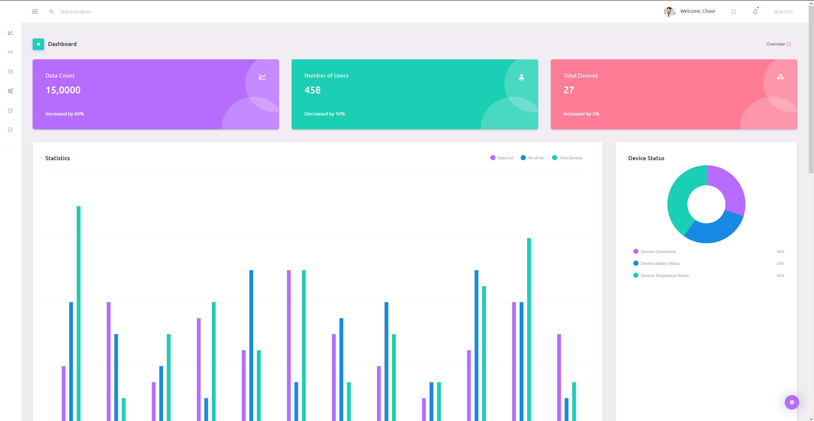
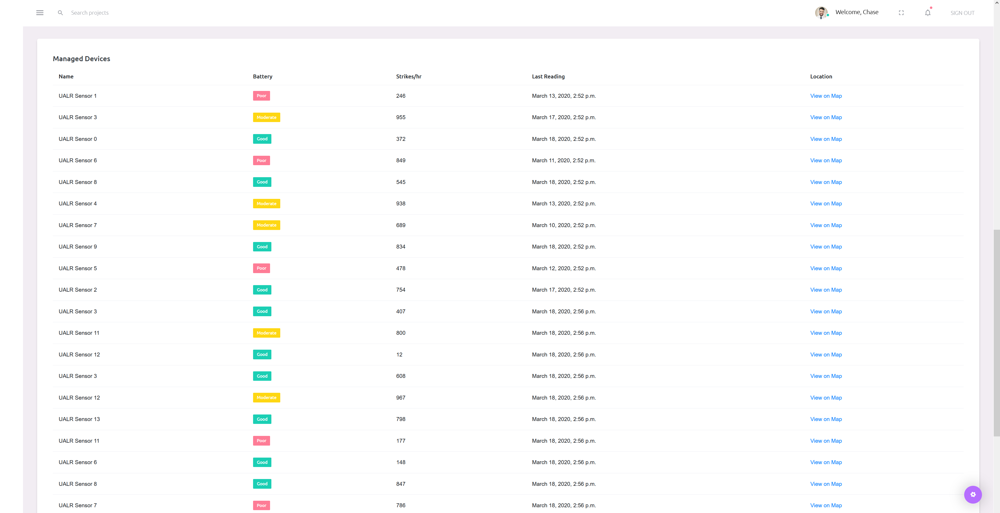
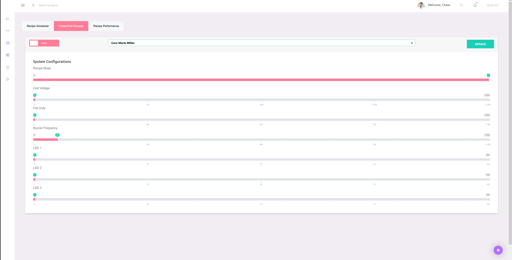

Dashboard Home Page
On the SolaRid Dashboard Home Page, users will be able to see various different collections of data sent from their SolaRid devices, processed by the AI system, and collected for presentation and user interaction on their web browser.
Device Management
Further down the Home Page, users will find a list of currently owned devices. The list will display the Device Name, Battery Level, Strike Count per Hour, Last Device Reading, and a link to view the specific device on the Map page of the dashboard.
Recipe Management
On the "Recipes" page of the dashboard, users will be able to create, edit, and apply a user defined "recipe" to a SolaRid device. A "recipe" consists of custom applications of: Grid Voltage, Fan Duty, Buzzer Frequency, and independent control of the Light Grids of the system.
After a user has created a recipe, they can then assign the recipe to be active for any period of time throughout the day, on whichever device they choose.
Map of Controlled Devices

On the "Map" page of the dashboard, users will see an up-to-date Google Map with integrated plant symbols, identifying where on the map their device(s) are.
Application Specifications
| Recipe Parameters | Customize Fan Speed, Schedule Activation, Light Panels, & Temperature Settings |
| GPS, Date/Time, Temp., & Humidity |
Real-time data values stored in database, processed, then displayed for users |
| Battery Level & Solar Panel Efficiency | Current power level, predicted battery life expectancy, solar panel charging status |
| Recipe File Name | Customized recipe parameters stored for user convenience |
| Recipe History | Strikes per hour, Densidy Index, Temp. Accumulations over a defined period; data is displayed and graphed |